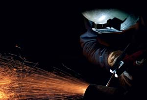
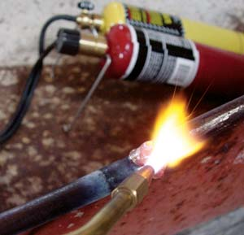
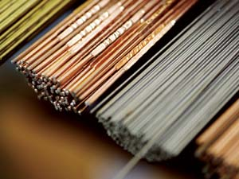
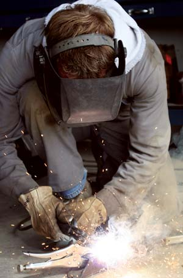
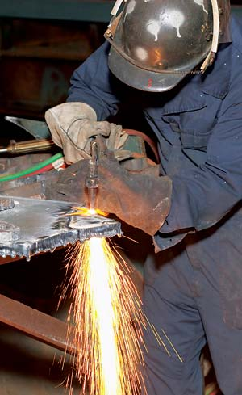
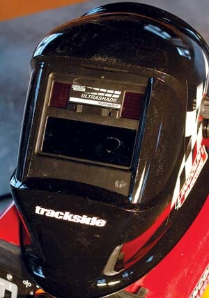
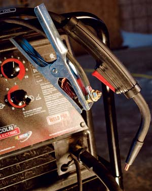
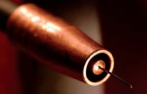

There’s never been a better time to add brazing and welding skills to your homesteading repertoire. Brazing and welding are all about joining metal parts quickly, permanently and with great strength - you’ll find that they can revolutionize the way you maintain and improve your homestead.
Brazing requires only simple equipment that costs less than $100. And welding equipment is more effective, easier to use and more affordable ($175 and up) than ever before. Anyone with a handy streak will find that today’s metal-melding options offer a huge boost towards self-sufficiency, cost savings and hands-on satisfaction.
Most of my metalwork involves repairs, but welding and brazing also offer endless possibilities for artistic and decorative projects. I’ve fixed gates, mailboxes, tractor drawbars, broken muffler mounts and a favorite garden trowel whose blade broke off the shank. You can build utility shelves and workshop tables; restore machinery; build marine docks; or convert the back end of a pickup truck into a trailer (a favorite project here on Manitoulin Island in Canada).
Brazing, often discussed with welding, actually is a fundamentally different process. It’s more like heavy-duty soldering using bronze rods instead of solder. The underlying metals are not melted, so it requires substantially less heat than welding processes, which do melt and fuse underlying metals. Mild (low carbon) steel and cast iron include a large percentage of iron, and their composition makes them ideal candidates for brazing.
If you’re brand new to metalwork, then brazing is a good way to gain experience without spending a lot of money. It’s useful for repairing lightweight machinery parts, thin metal railings and gates, or sheet-metal items such as wheelbarrow pans or steel lawn mower decks.
The technique is simple: Hold a torch in one hand and a bronze rod in the other. Heat the metal parts you’re joining to red-hot. Touch the bronze rod to the heated metal so it melts and flows between the parts, forming a strong bond as it cools. Brazing is ideal for metals up to about a quarter-inch thick.
Standard propane torches don’t generate enough heat for brazing, but an inexpensive oxygen/propane or oxygen/MAPP gas torch will do the job nicely. These torches cost less than $100 and work quite well for ferrous metals less than an eighth of an inch thick. Either is great starter equipment and easily portable. You’ll find them rather expensive to operate for larger jobs, especially for the oxygen. It’s the more expensive of the two gases, and the torch uses it much more quickly than the combustible gas. You’ll get approximately 20 minutes of brazing time from a disposable cylinder of oxygen that costs about $9.
If brazing turns out to be your thing, and you want to invest in equipment that delivers more heat and costs less to operate, consider an air/acetylene torch. It requires only one cylinder of compressed acetylene gas (you can buy or rent small, portable tanks). The torch mixes the acetylene with ambient air to create a moderately hot, blue flame. Air/acetylene torches generate plenty of heat for larger brazing jobs. The best units combine a push-button ignition system and a tool caddy that wraps around the tank and holds goggles, tank wrenches or replacement torch tips. A system like this costs $100 to $150, and it’s portable, economical and useful for many jobs.
You can weld in several ways, but all the processes boil down to the same basic premise: Apply enough heat to melt metal parts so they fuse together, and then let the weld area cool. The heat can come from a burning gas, such as acetylene, or from a high-voltage electric spark that jumps (arcs) from the welding tool to the metal you’re welding. Regardless of the heat source, good welds are stronger than the surrounding metal, in part because metal is added to the weld from a rod or wire that melts into it. With the proper equipment and materials, you can weld cast iron, stainless steel, aluminum and other metals.
When it comes to acquiring welding gear, you’ve got three main options to consider: oxygen/acetylene torches, stick-type electric arc welders and wire-feed electric arc welders. Each option varies in cost, size and effectiveness. The best system for you depends on your expected usage and your budget.
Gas welding is like brazing in that it’s done with a torch, but instead of using molten bronze to “glue” metal parts together, welding generates enough heat to actually melt the metal on each side of the joint.
To weld, you use a hand-held steel welding rod that melts, adding metal to the weld pool. This added steel fills gaps and boosts joint strength. You hold the torch in one hand and the welding rod in the other, then heat the metal parts at the joint line until a pool of molten steel develops. Move the torch and rod in half-inch diameter circles to keep the weld pool moving along the joint.
You need a really hot flame for gas welding, and that’s where the oxygen/acetylene torch comes in. Two cylinders of compressed gas feed this welding system to create an extremely hot, blue flame that’s suitable for work with all kinds of ferrous metals. Oxygen/acetylene torch systems are available for less than $175 and include gas regulators, hoses and different torch heads for brazing, welding and cutting. The torch heads used for both brazing and welding are relatively simple.
Oxygen/acetylene torches and hoses include standardized fittings. This means the same set of torches can hook up to a variety of tank sizes. You can get sets ranging from small, portable tanks that fit into a carrying caddy to large, semi-stationary tanks meant for use in a workshop. All but the smallest tanks are available as refillable rental units. You pay an annual leasing fee for the tank, plus the cost of whatever gas you use.
Electric arc welding machines use an electric arc to create heat - not a flame. They include a grounding cable that clamps to the metal part to be welded. The machine passes a powerful electric current through another cable to the welding tool. When the tip of the tool gets close enough to the grounded metal part, electric current leaps (arcs) from the tool, through the metal part and back through the grounding cable to the welding machine. This current flow, the arc and the resulting heat are the heart of all electric welding processes.
Two basic kinds of arc welders exist: stick-type and wire-feed. Stick-type electric arc welders are extremely effective. Economy, a long history and strong welds are why stick welders are found in thousands of garages and farm workshops.
As in gas welding, stick welders deposit new metal into the weld area to fill gaps and boost strength. In fact, the word “stick” refers to the consumable welding rod, which you clamp into a hand-held welding tool. Electric welding rods come in numerous diameters and compositions designed for different applications, but in every case the metal rod is covered with a coating called flux. The flux coating vaporizes during use, creating a shield of inert gas that protects the weld for the few seconds that it remains in a molten state. Without this protective gas, the weld would oxidize rapidly while hot, ruining its strength and appearance. The most useful general-purpose stick welders require a 230 volt/50 amp circuit, and you can get a basic set of equipment for less than $300.
You simply drag the tip of the welding rod over the weld area to strike the arc. Skill in stick welding comes from learning how much electric power to dial into your machine for various situations, plus the experience required to learn to control the welding rod. The rod’s angle, its distance from the metal and the speed of its movement all have a bearing on success.
When I learned to weld 25 years ago in high school shop class, we used all the main welding processes. But right from the start, my favorite machine was the wire-feed arc welder. Back then, the cheapest wire-feed machines cost thousands of dollars and were designed exclusively for industrial use. Recently, however, small, lightweight wire-feed welders have hit the market. These new models do the same work as the old industrial machines, at less than 15 percent of the cost. You can buy an outfit for less than $350.
The low-cost wire-feed revolution starts with a spool of thin metal wire. When you press the trigger on the hand-held wire-feed gun, a strand of fresh welding wire flows out of the tip continuously, pulled off the spool by a motor drive system inside the welder. Like a stick-welding rod, the wire is electrically energized, so a blue arc jumps from its tip to the grounded metal part. The arc generates heat, which melts the wire and the surrounding metal. The wire adds metal to the weld pool, boosting strength and filling small joint gaps. Move the gun to push the molten weld pool along the seam. You can adjust wire feed rates to match the amount of wire deposited along the weld joint. Bottom line: Wire-feed welders produce a nice, neat weld even if you’re not a professional. Most people can get pretty good at it after just 20 minutes of practice.
Besides ease of use, wire-feed welders have three other advantages. First, they’re more efficient than stick welders, allowing useful machines to operate on normal 115 volt household circuits. Larger, 230 volt wire-feed machines do exist, but you often don’t need that much power. Second, they work exceptionally well on both thin and thick metals. Stick welders can be hard to control when welding metal less than three-sixteenths of an inch thick, and it’s possible to burn holes right through thin material.
Third, wire-feed welders can weld aluminum. Better-quality DIY wire-feed welders can be set up to pump compressed inert gas through the gun and out the welding tip. This gas shields the molten weld zone from reacting with oxygen, just as the flux coating on stick-welding rod does. But the gas does this job better, opening a whole new world of possibilities. Wire-feed welders that use shielding gases are called “metal inert gas” (MIG) welders. Besides being essential for welding aluminum, MIG welding is also great for creating neat welds in steel down to less than one-sixteenth of an inch thick. Self-shielding welding wire also is available for welding without a shielding gas. This is an excellent and simple option for general purpose wire-feed welding of mild steel and other ferrous metals where a clean weld appearance isn’t essential.
This article is a bare-bones introduction to welding and brazing - you’ll need to learn more before you’re ready to fire up a torch. There are good books out there, and you can probably find classes at a nearby vocational or technical center (check the American Welding Society’s school locator). Also look for a veteran welder who’s willing to share his or her knowledge. Once you master brazing and welding, you’ll never think of metal the same way again. With practice and the right equipment, you’ll gain an advantage in building a self-sufficient lifestyle. And besides, melting metal is just plain fun!
Welding is perfectly safe as long as you use appropriate equipment and follow the safety procedures outlined with the equipment you buy. Read manufacturer’s instructions carefully. You’ll need to wear protective clothing, provide good ventilation and keep combustibles well away. It’s imperative to protect your eyes by wearing welding goggles or a welding mask. Until recently, that meant working blind after pulling the welding mask down over your face and before sparking up an electric welding arc. Not so now - it’s never been easier to protect your eyes, thanks to the emergence of something called “auto-darkening lenses.”
Auto-darkening lenses automatically and rapidly become darker the moment an arc is struck and bright light is produced. Before the arc appears, the world outside the mask looks as if you’re wearing sunglasses. But as soon as the arc appears, the glass of the face shield immediately darkens, allowing you to see safely right into the molten center of the weld pool.
|
 ISTOCKPHOTO/GLEN JONES You can master welding and brazing skills to take on a whole new world of projects and home repairs. |
 STEVE MAXWELL An oxygen/propane torch provides sufficient heat for brazing. |
 ISTOCKPHOTO/PAUL MORTON The kind and thickness of metal to be welded determine the proper choice of welding rod. |
|
 ISTOCKPHOTO/LAURI WIBERG A stick-type arc welder joins metal parts quickly. |
 ISTOCKPHOTO/GLEN JONES Welding is only one part of metalworking. You also can cut steel, using oxygen/acetylene equipment with a special head called a cutting torch. Cutting torches come as part of many consumer-grade gas welding sets. In addition to mixing the gases before they exit the torch tip and burn, a cutting torch has an additional lever on the top that releases a narrow, high-pressure stream of oxygen. Once you’ve heated the metal along the cut line so it’s red hot, you press the lever down with your thumb before dragging the torch tip along the cut line. The oxygen blast burns the steel away in a thin line - it’s actually ultra-fast oxidation. Cutting neatly with a torch takes practice, but it is fast and effective once you get the hang of it. |
 STEVE MAXWELL Welding is perfectly safe as long as you use appropriate equipment and follow safety procedures. This welding mask features auto-darkening lenses. |
|
 STEVE MAXWELL A wire-feed welder’s grounding clamp and welding gun. Inert gas flows from the gun tip, shielding the molten weld from oxygen. |
 STEVE MAXWELL Inert gas flows from the wire-feed welding gun tip, shielding the molten weld from oxygen. |
|